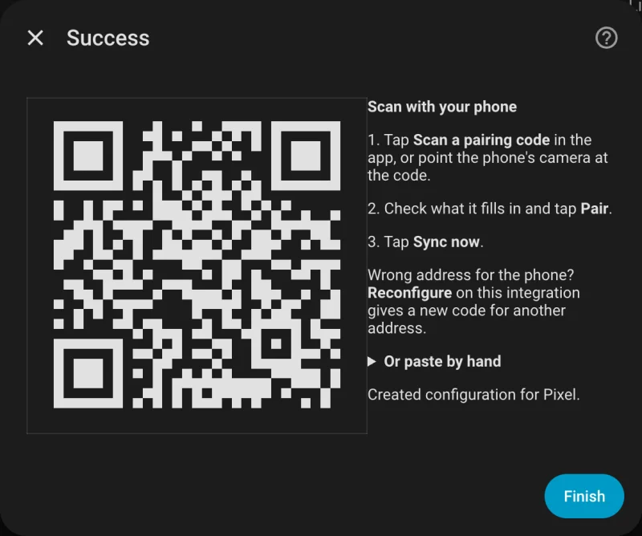
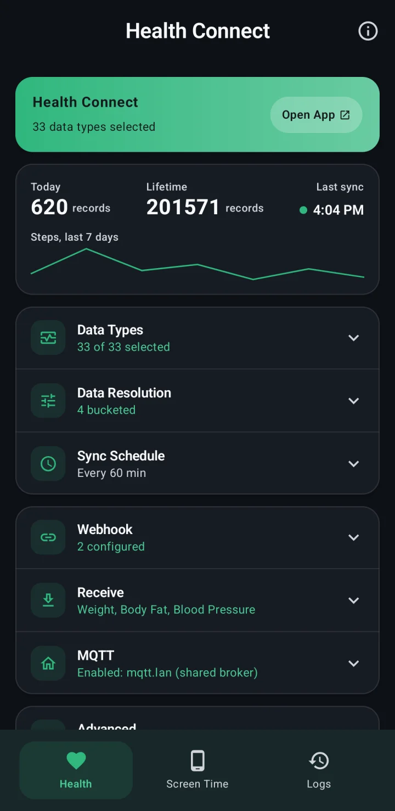
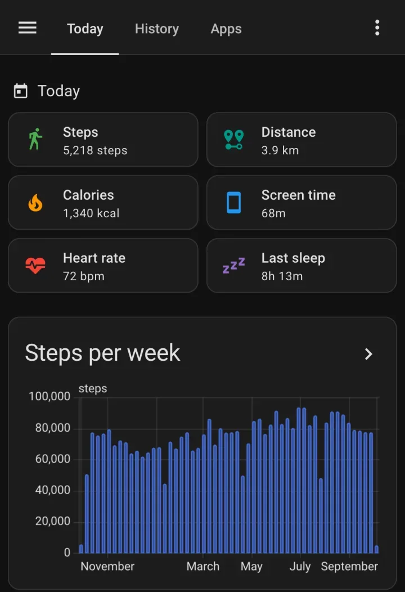

How do I get Garmin data into Home Assistant?
Let Garmin Connect write to Health Connect on your Android phone, then let Life Dashboard Companion, an open-source Android app, send it to the Life Dashboard integration in Home Assistant. Home Assistant never needs your Garmin username, password or MFA code, so a change to Garmin's login can't break it.
Garmin watchGarmin ConnectHealth ConnectLife Dashboard CompanionHome Assistant
What arrives and what stays with Garmin
Garmin Connect shares part of your data with Health Connect, and only that part can reach Home Assistant. It needs Garmin Connect 5.14.1 or later on Android 14 or later.
| Data | Types |
|---|---|
| Arrives | Steps, distance, active and total calories, activities as exercise sessions, sleep with stages, heart rate, weight, body fat |
| Stays with Garmin | Resting heart rate, HRV (Garmin writes none at all), Body Battery, stress, Pulse Ox, respiration, training load (every app compared) |
That's Garmin's own list as of October 2026, and Garmin can change it with any Garmin Connect update. Health Connect has no type for Body Battery, stress or training load at all.
What you need
- An Android phone with Android 14 or newer, and Garmin Connect 5.14.1 or newer paired with your watch.
- Home Assistant 2026.3 or newer, with HACS, for the Life Dashboard integration.
- Life Dashboard Companion for Android. Today you install the signed APK from GitHub, or through Obtainium, which keeps it up to date. Google Play is in closed testing, and F-Droid is reviewing the app.
Set it up
- In Garmin Connect, go to Settings > Connected Apps > Health Connect and allow the data types.
- In HACS, add
https://github.com/owen282000/life-dashboard-haas a custom repository of type Integration, download Life Dashboard and restart Home Assistant. - Go to Settings > Devices & services > Add integration, search for Life Dashboard and name the phone. Put Home Assistant's IP address in the Home Assistant address field, such as
http://192.168.1.20:8123; Home Assistant shows it under Settings > System > Network, in the Network adapter section. The dialog then shows a QR code.
- Install Life Dashboard Companion: open the free APK from GitHub on the phone and allow installs from your browser once, or add it in Obtainium. Android may warn you before it installs an APK from outside the Play Store; it does that for every app from another source. Open the app, and at Where should your data go?, tap Scan a code from Home Assistant, scan the code and tap Pair.
- On the Health tab, tap Grant and allow your data types and reading in the background. The essentials preset also turns on resting heart rate, which Garmin doesn't share, so that one gets no sensor. Switch on body fat and exercise sessions under Data Types if you want them.
- Tap Sync Now. For older data, tap Backfill and pick 30d, 90d or 365d, after Grant history access if the dialog shows it.

The Health Connect guide for Home Assistant has every step in more detail: where to find Home Assistant's IP address, battery settings and putting a tile on your dashboard.


What you get
- Sensors for today's steps, distance and calories, and the latest heart rate, last sleep, weight and body fat. Sensors appear as data arrives, so a type Garmin doesn't share never shows up as an empty one.
- History in long-term statistics: one value per day for steps, distance, calories, sleep and exercise minutes, and an hourly mean, minimum and maximum for heart rate, weight and body fat. You can chart the hourly minimum of heart rate instead of a resting value, but it isn't the resting heart rate Garmin shows.
- No double counting. Steps, distance and calories use Health Connect's daily totals, so a phone and a Garmin that both count a walk count it once.


Limits
- Garmin Connect writes to Health Connect after each sync with the watch, so data can arrive hours after it was recorded, with its original time. The next sync of the app picks it up.
- Garmin reads nothing from Health Connect. Readings from a Home Assistant scale reach Samsung Health or Google Health through the app, but not Garmin Connect.
- A home network address only syncs at home. A public HTTPS address or Home Assistant Cloud works everywhere.
Two installs: the integration from HACS and the app on your phone. After that, switch on Health Connect in Garmin Connect and pair with one QR code.
Open in HACS Get the Android appCommon questions
Does Home Assistant need my Garmin login?
No. The data comes from Health Connect on your phone, and the app sends it straight to Home Assistant. Nothing logs in to Garmin's cloud.
Why is there no resting heart rate or Body Battery?
Garmin Connect doesn't share them with Health Connect, and Health Connect has no type for Body Battery, stress or training load. The community Garmin Connect integration reads them from Garmin's cloud with your Garmin account, and it can run next to this app.
My phone runs Android 13. Can I still use it?
Not with Garmin. Garmin Connect only writes to Health Connect on Android 14 or later. The app itself runs on Android 9 and newer, for watches whose app writes to Health Connect on older Android.
Can I send Garmin data somewhere other than Home Assistant?
Yes. The same data can go to an MQTT broker or to any URL that accepts a JSON POST. See Health Connect to a webhook.